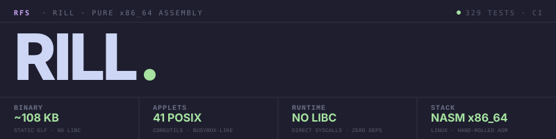

Unix utilities, in pure assembly.
A BusyBox-style multi-call binary in pure x86_64 NASM assembly — 41 Unix utilities, ~108 KB static ELF, direct syscalls, no libc, no runtime. The assembly cousin to jib (Rust), topsail (Go), and mainsail (Python).
$ rill find . -name '*.asm' -type f | rill wc -l 49 $ rill ls -la build/ | rill grep -E '^l' lrwxrwxrwx 1 west west 4 Apr 26 12:22 cat -> rill lrwxrwxrwx 1 west west 4 Apr 26 12:22 ls -> rill $ rill sort -k 2 -n -t , data.csv | rill head -3 apple,1 banana,2 cherry,3 $ file build/rill build/rill: ELF 64-bit LSB executable, x86-64, statically linked
Direct syscalls. Zero libc. A static ELF the kernel can map and run. The same multi-call shape as jib / topsail / mainsail — different substrate.
Every common shell tool dispatched through a single executable — file ops, text processing, system info, process inspection, a recursive tree walker. Symlink it as cat, ls, grep and the multi-call dispatcher takes over from argv[0].
Every operation is a syscall to the kernel. Buffers live in .bss (lazy-paged) or on the stack. The whole binary is two PT_LOAD segments — text r-x, data rw-.
find with glob + type + depth limits. grep with BRE regex (. * ^ $ [...]). sort with -k F[,G], custom delimiter, case-fold. ls -l with auto-sized columns and localtime mtime.
core/tz.asm parses /etc/localtime as a TZif v2/v3 file, finds the offset for now via linear scan, caches it. ls -l and stat render mtimes in local wall time.
The tests/integration bats harness diffs our output against /usr/bin/<applet> byte-for-byte where the comparison is deterministic, and checks exit codes everywhere else. CI runs the same harness on Ubuntu against every push.
One .asm file per applet — most are 50–250 lines. Add a new one by dropping src/applets/<name>.asm exposing applet_<name>_main, plus an entry in the dispatch table. The Makefile auto-globs.
System V AMD64 throughout. Callee-saved (rbx, rbp, r12–r15) carry state across nested calls; caller-saved scratch (rax, rcx, rdx, r8–r11) is push/popped explicitly. Stack lands at 0 mod 16 at every inner call.
core/regex.asm — a recursive backtracker covering ., *, ^, $, [...], [^...] with literal ranges and \X escapes. Drives grep's default mode; -F bypasses for fixed strings.
Each applet implements the common POSIX flags. See the README for per-applet flag coverage and known gaps.
Same shape as the family — clean separation between the kernel-facing entry, the basename dispatcher, and the per-applet implementations. Adding an applet means dropping one file and one extern.
_start in src/start.asm reads argc and argv from the kernel-prepared stack and tail-calls dispatch. The exit code goes to SYS_exit_group.
dispatch picks an applet by basename(argv[0]) against the applet table. If argv[0] is rill, it shifts argv and retries — so rill ls and a ls symlink dispatch identically.
Each src/applets/<name>.asm exposes applet_<name>_main. Receives argc in edi, argv in rsi; returns its exit code in rax. Reads via SYS_read, writes via core/io.asm's write_all.
The multi-call BusyBox idea translated into four implementations that share the same naming, the same applet surface, and the same architecture skeleton. Pick the one whose tradeoffs fit your environment.
Linux with NASM, GNU ld, GNU make, and bats — or WSL on Windows. No Cargo, no go.mod, no requirements.txt. make and you're done.
# Prereqs (Debian / Ubuntu) $ sudo apt install nasm binutils make bats # Clone and build $ git clone https://github.com/Real-Fruit-Snacks/rill $ cd rill $ make → build/rill (~108 KB static ELF) # Wire up multi-call dispatch $ make symlinks → build/cat -> rill, build/ls -> rill, … # Run the bats suite $ make test 329 tests, 329 passed, 0 failed
# Subcommand dispatch $ ./build/rill date Sun Apr 26 17:42:11 UTC 2026 # Multi-call via argv[0] $ ./build/ls -la /etc | ./build/grep '^d' drwxr-xr-x 3 root root 4096 Apr 26 12:18 ssh drwxr-xr-x 4 root root 4096 Apr 26 12:18 systemd # find with full glob support $ ./build/find . -name '*.asm' -type f ./src/start.asm ./src/core/regex.asm ./src/applets/find.asm … # grep BRE regex $ echo abc123 | ./build/grep '[0-9]' abc123